Luminous воспроизводит музыку, которая уже есть на вашем компьютере. Чтобы начать, библиотека не нужна.
Включите музыку сразу
•
В разделе Слушать музыку выберите Открыть файлы или Воспроизвести папку.
•
Или перетащите файлы и папки в окно.
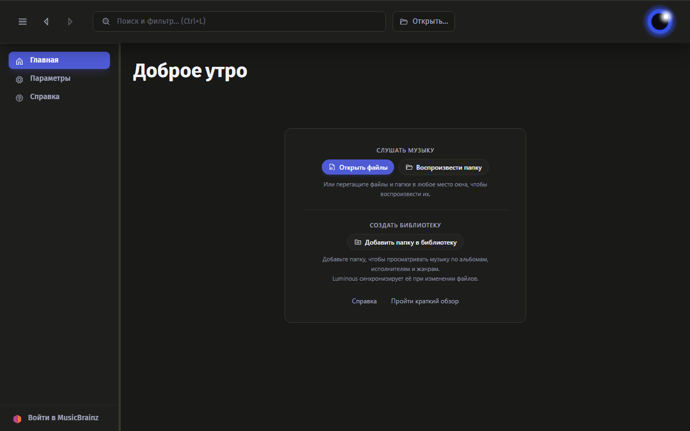
Создайте библиотеку
1
Выберите Добавить папку в библиотеку в разделе Создать библиотеку или добавьте папку в Параметры → Источники.
2
Luminous сканирует её, а затем продолжает следить за ней. Новые, перемещённые и переименованные файлы обновляются сами.
3
Просматривайте музыку в разделе Коллекция на боковой панели.
Главная
•
На главной показан актуальный обзор вашей библиотеки и прослушивания.
•
Лучшие альбомы ранжирует альбомы по числу минут, проигранных на этой неделе. Значок Возвращение отмечает альбом, вернувшийся в чарт.
•
Выберите, с какого дня начинается неделя, в параметре Начало недели в разделе Параметры → Общие.
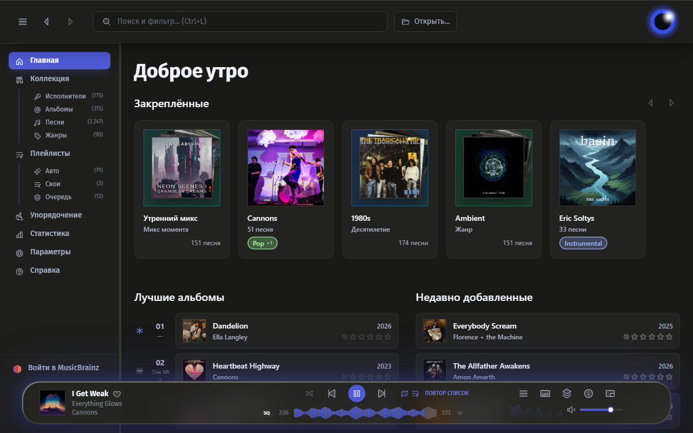
Краткий обзор
•
Вы впервые в Luminous? Краткий обзор познакомит вас с интерфейсом.
•
Запустите его снова в любой момент кнопкой Запустить обзор возможностей заново в разделе «Справка».
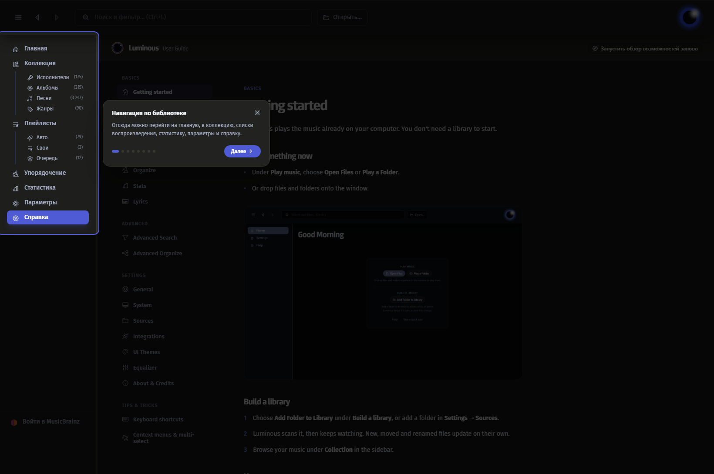
Основы
Ваша коллекция
Коллекция на боковой панели содержит четыре вида: «Исполнители», «Альбомы», «Песни» и «Жанры». Каждый показывает количество и элемент сортировки справа вверху.
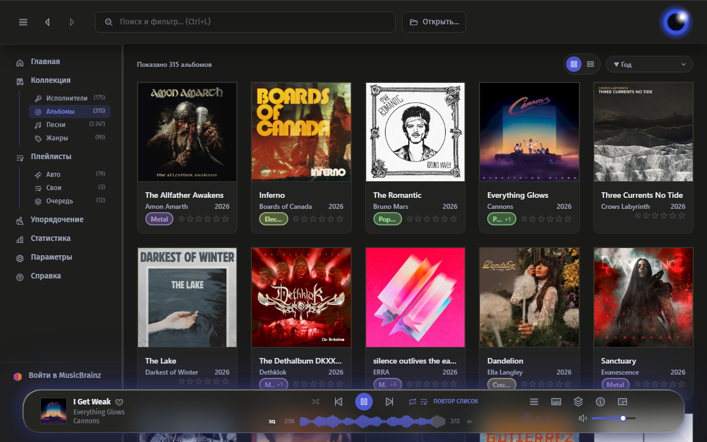
Песни
•
Смотрите всю библиотеку в виде таблицы с сортировкой.
•
Щёлкните правой кнопкой мыши заголовок любого столбца, чтобы выбрать отображаемые поля, например Число прослушиваний и Число пропусков.
•
Перетащите правый край заголовка столбца, чтобы изменить его ширину. Дважды щёлкните край, чтобы вернуть прежнюю ширину.
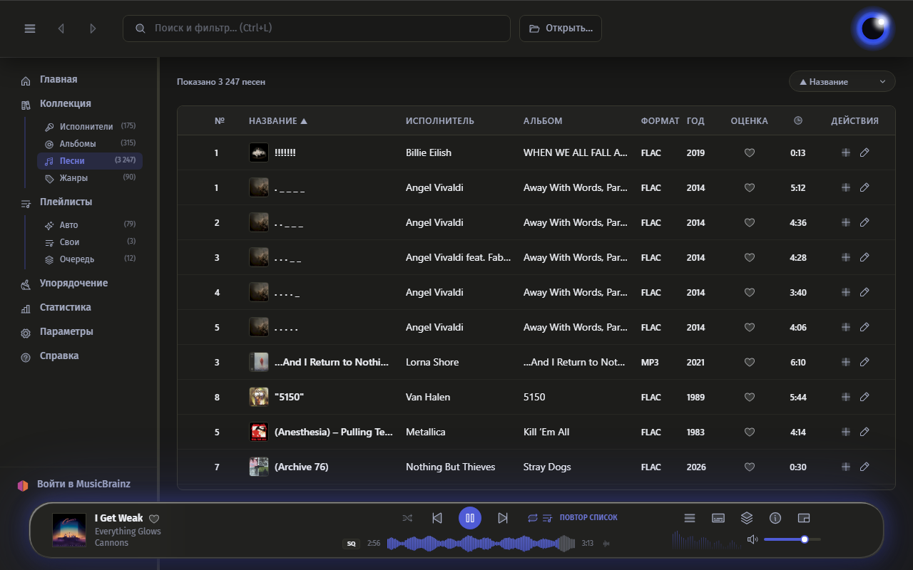
Жанры
•
Каждый жанр представлен карточкой. Число песен в ней включает его поджанры.
•
Перетащите метку поджанра на другую карточку, чтобы переместить её, или перетащите маркер карточки, чтобы сделать весь жанр поджанром.
•
Щёлкните правой кнопкой мыши метку или заголовок карточки и выберите Переименовать, Сделать жанром верхнего уровня или Удалить (жанр удаляется из всех песен).
•
Щёлкните цветной образец на карточке, чтобы изменить её цвет.
•
Щёлкните карточку или метку, чтобы открыть её автосписок.
•
Теги, которые вы добавляете на страницах исполнителей, получают собственные карточки в разделе Теги исполнителей над жанрами песен.
•
Справа вверху переключайтесь между видами карточек и строк и сортируйте по названию или числу песен.
•
Песни без жанра собраны в группе Без жанра.
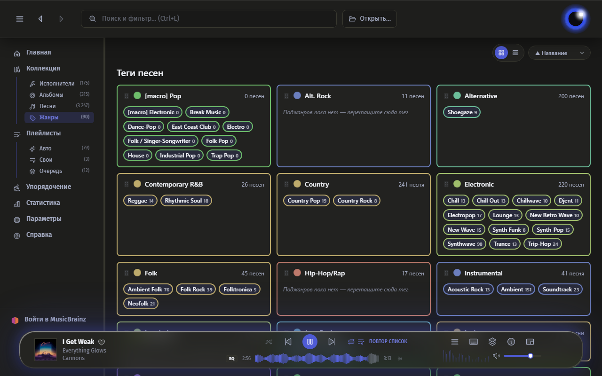
Альбомы
•
Откройте альбом, чтобы увидеть его композиции. Боковая панель показывает формат, битрейт, частоту дискретизации и громкость воспроизводимого файла.
•
Нажмите +, чтобы добавить альбом или песню в активный список воспроизведения (это очередь, пока вы не выберете другой).
•
Нажмите карандаш, чтобы открыть окно Изменение тегов альбома и сразу исправить название, исполнителя, жанр или год у всех композиций.
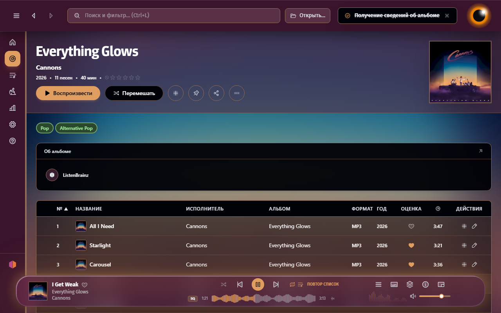
Изменение тегов
•
Нажмите карандаш рядом с композицией, чтобы открыть окно Изменение тегов песни.
•
Поля «Исполнитель», «Исполнитель альбома», «Композитор» и «Жанр» принимают несколько значений. После каждого нажимайте Enter.
Панель проигрывателя находится внизу окна, пока играет музыка.
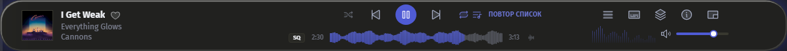
Панель проигрывателя
•
Нажмите обложку, чтобы открыть режим погружения (Ctrl2).
•
Нажмите сердечко или звёзды, чтобы оценить песню. Выберите стиль в Параметры → Общие.
•
Нажмите волновую форму, чтобы перейти к нужному месту песни. Кнопка рядом с ней переключает отображение на частотные полосы: синий — низкие, янтарный — средние, белый — высокие.
•
Перемешивание переключает значения «Выкл.», «Все» и:
– В альбоме: альбомы по порядку, композиции в каждом перемешиваются.
– Альбомы: альбомы перемешиваются, композиции идут по порядку.
– Исполнители: по одному исполнителю за раз, исполнители выбираются случайно.
•
Повтор переключает значения «Выкл.», «Песня», «Альбом» и «Список».
•
Кнопки справа открывают:
меню песни
текст песни
очередь
информационную панель (CtrlI)
мини-проигрыватель (CtrlM)
•
Мультимедийные клавиши и системные элементы управления воспроизведением работают, даже если Luminous не на переднем плане.
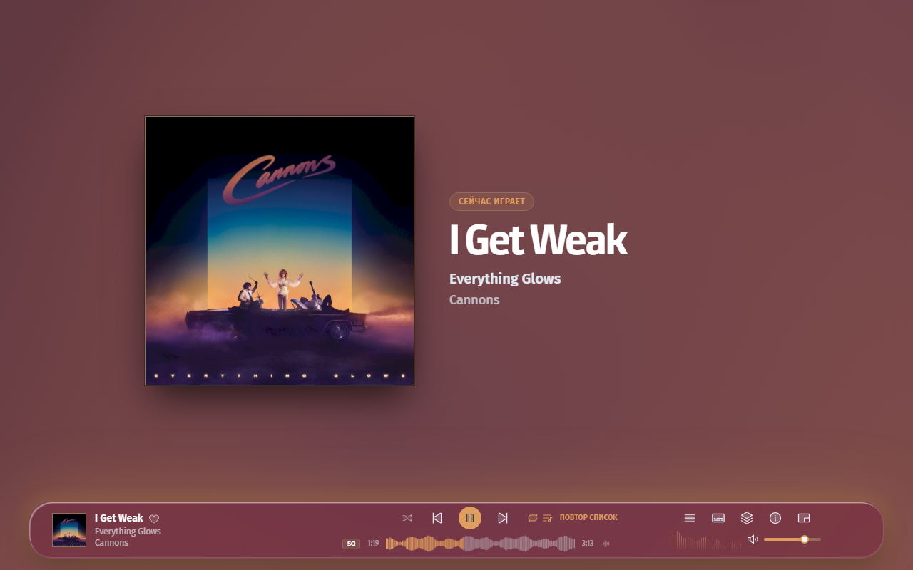
Мини-проигрыватель
•
Наведите курсор на мини-проигрыватель, чтобы показать его элементы управления и оценить песню.
•
Перетащите его за верхний край, чтобы переместить.
•
Кнопкой текста переключайтесь между обложкой и текстом песни в реальном времени.
•
Нажмите Вернуть полное окно (CtrlM) в правом нижнем углу, чтобы вернуться.
В покое
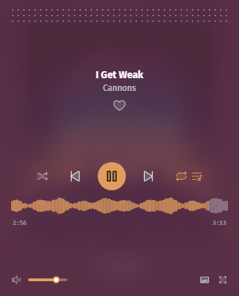
При наведении
Основы
Списки воспроизведения
Списки воспроизведения бывают трёх видов:
•
Свой: создайте его сами, перетаскивая песни.
•
Умный: задайте правила, например «Жанр — Rock и год после 2015», и Luminous будет поддерживать список в актуальном состоянии.
•
Авто: списки по жанру, десятилетию и BPM, которые Luminous создаёт сам; до 25 песен обновляются ежедневно. Список появляется, когда подходят 25 песен. Нажмите Обновить список, чтобы получить новую подборку.
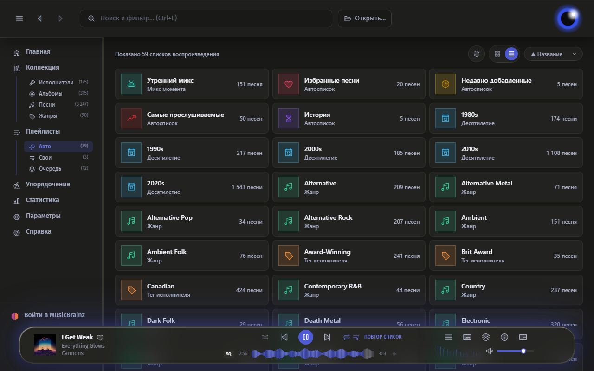
Добавление песен
•
Нажмите + рядом с песней или альбомом, чтобы добавить их в очередь.
•
Чтобы добавлять в другой список воспроизведения, сначала нажмите Сделать активным на нём.
•
Перетащите файлы или папку в окно, чтобы заменить очередь и начать воспроизведение. Удерживайте Shift, чтобы добавить их в конец.
Умные списки воспроизведения
•
Нажмите Новый умный список, добавьте правила, затем назовите список и сохраните его.
•
Позже используйте Изменить правила, чтобы изменить их.
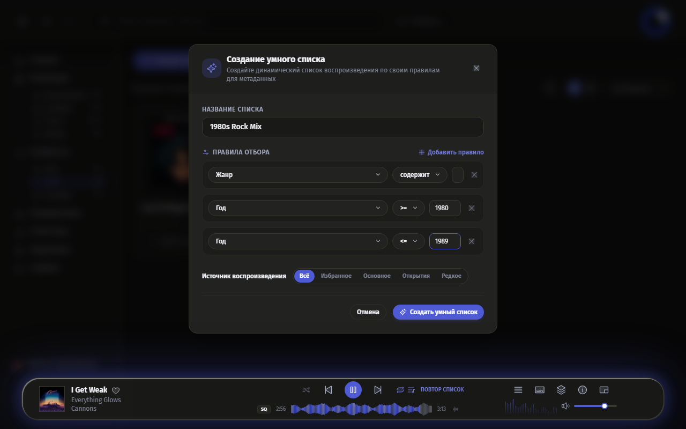
Списки по BPM
Списки по BPM используют тег BPM каждой песни. Luminous не измеряет темп, поэтому песни без тега BPM в них не попадают. Создавайте собственные диапазоны с помощью умного списка воспроизведения.
Категория
Диапазон BPM
Медленный BPM
60–90
Средний BPM
90–115
Быстрый BPM
115–130
Энергичный BPM
130–150
Экстремальный BPM
150+
Управление списком воспроизведения
•
Дважды щёлкните название, чтобы переименовать список.
•
Перетаскивайте строки, чтобы изменить порядок. Выделите несколько, чтобы переместить их вместе.
•
Щёлкните заголовок столбца для сортировки или введите текст в поле фильтра, чтобы сузить список.
•
Кнопки удаления убирают дубликаты и недоступные песни, а Очистить список опустошает список воспроизведения.
•
Щёлкните правой кнопкой мыши заголовок столбца, чтобы добавить столбец Дата добавления.
Импорт и экспорт
•
Импортируйте и экспортируйте списки воспроизведения в форматах .m3u, .m3u8, .pls и .xspf.
•
При экспорте выберите Использовать относительные (переносимые) пути к файлам, чтобы список продолжал работать в другой папке или на другом компьютере.
Основы
Статистика
Статистика показывает ваше прослушивание; данные вычисляются на вашем компьютере и никуда не отправляются.
•
Выберите Последние 7 дней, Последние 28 дней или Последний год.
•
Смотрите лучших исполнителей, альбомы, песни и жанры. Нажмите на любой элемент, чтобы открыть его.
•
Тепловая карта показывает минуты прослушивания по дням, а также показатели Текущая серия и Самая длинная серия.
•
Время суток показывает, когда вы слушаете чаще всего.
•
Чтобы что-то исключить, щёлкните это правой кнопкой мыши где угодно и выберите Не учитывать в статистике.
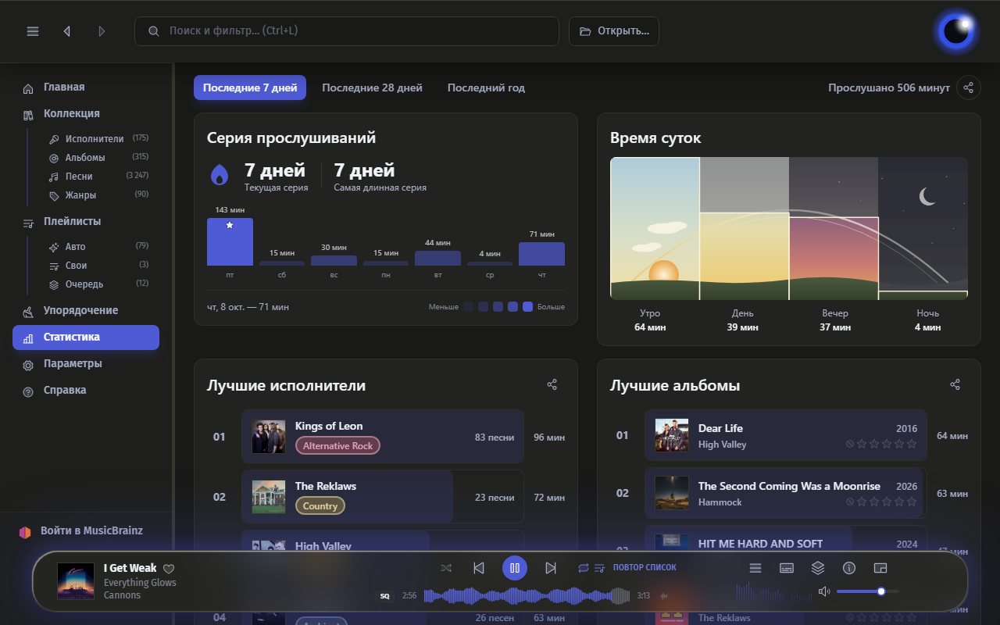
Основы
Тексты песен
Включите Тексты песен на панели проигрывателя. Текущая строка подсвечивается в такт музыке.
•
Нажмите строку, чтобы перейти к ней.
•
Загрузить заново повторяет поиск текста.
•
Изменить исправляет текст или время.
•
Текст без меток времени показывается простым текстом.
•
Для инструментальной композиции выберите Отметить как инструментальную, чтобы Luminous перестал искать текст.
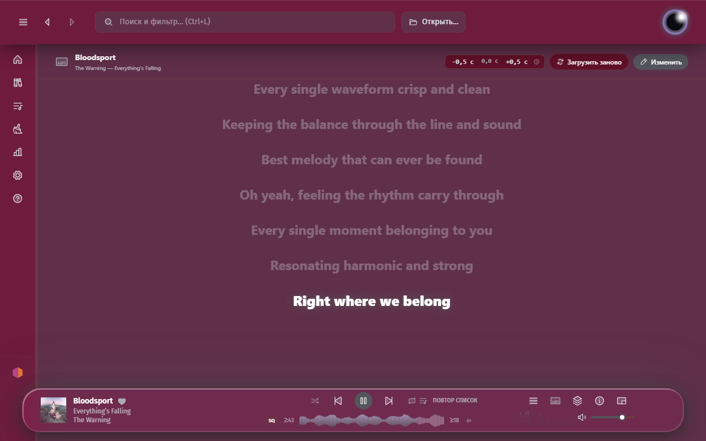
Дополнительно
Расширенный поиск
Вводите в строке поиска условия вида field:value, чтобы фильтровать всю библиотеку. Например, genre:rock rating:>=4 находит рок-песни с оценкой от 4 звёзд.
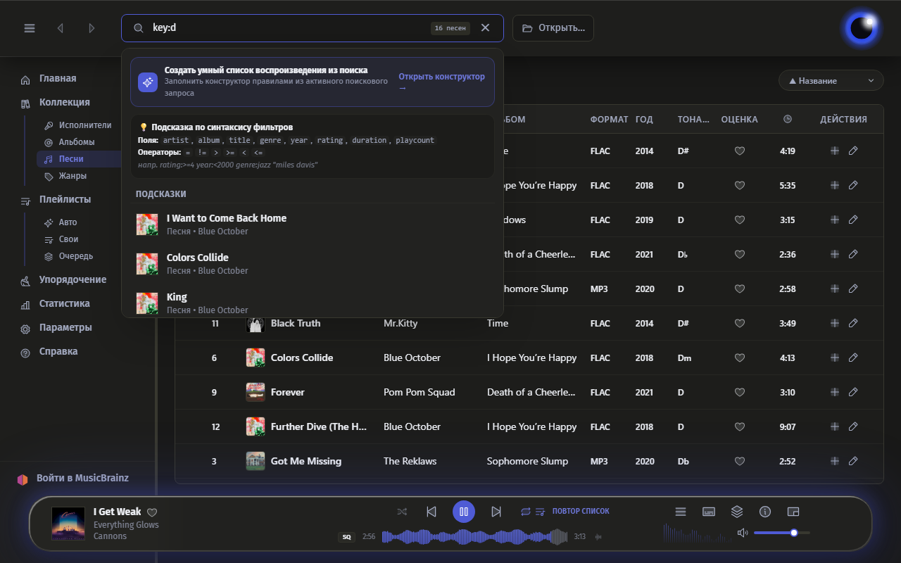
Синтаксис
•
Текстовое поле без оператора означает содержит: genre:rock находит любой жанр, содержащий «rock».
•
Числовое поле без оператора означает точное совпадение: year:1994 находит только 1994 год.
•
Несколько условий должны выполняться одновременно: rating:>=4 year:<2000 genre:rock.
•
Слова без двоеточия ищутся в названии, исполнителе и альбоме: rating:>=4 "tom cochrane".
•
Значения с пробелами берите в кавычки: artist:"tom cochrane". Регистр в названиях полей не учитывается.
Операторы
Символ
Значение
=
равно
!=
не равно
>
больше
>=
больше или равно
<
меньше
<=
меньше или равно
(нет)
содержит (текст) / равно (число)
Поля
Каждое поле работает в строке поиска и как правило умного списка воспроизведения.
Поле (псевдонимы)
Тип
Что находит
artist
текст
Исполнитель (если его нет — исполнитель альбома)
artist_tag
текст
Тег исполнителя
album_artist
текст
Только исполнитель альбома
album
текст
Название альбома
title
текст
Название композиции
genre
текст
Жанр
composer
текст
Композитор
key / initial_key
текст
Тональность (напр. «D», «Am», «D♭»)
bpm
число
Ударов в минуту
year
число
Год выпуска
originalyear / original_year
число
Год оригинального выпуска (не переиздания)
rating / stars
число
Оценка в звёздах, 0–5
playcount / plays
число
Число прослушиваний
skipcount / skips
число
Число пропусков
lastplayed / last_played
число
Время последнего прослушивания (секунды Unix)
added
число
Время добавления (секунды Unix)
track / track_number
число
№ композиции
disc / disc_number
число
№ диска
bitrate
число
Битрейт (кбит/с)
samplerate / sample_rate
число
Частота дискретизации (Гц)
bitdepth / bit_depth
число
Разрядность
channels
число
Число каналов
compilation
0/1
Признак сборника
duration / length
длительность
Длина композиции, см. ниже
duration принимает секунды (duration:>180), MM:SS (duration:>3:30) или H:MM:SS (duration:<1:02:03).
Сохранение поиска как умного списка воспроизведения
Когда в запросе есть условие вида field:value, нажмите Открыть конструктор → в выпадающем списке. Каждое условие станет правилом; добавьте другие, назовите список и сохраните.
Примеры
Цель
Запрос
Рок-песни с оценкой от 4 звёзд, выпущенные до 2000 года
rating:>=4 year:<2000 genre:rock
Песни в тональности D
key:d
Быстрые композиции (120–130 BPM)
bpm:>=120 bpm:<=130
Смесь свободного текста и полей
rating:>=4 "tom cochrane"
Только альбомы-сборники
compilation:1
Композиции длиннее 3:30
duration:>3:30
Дополнительно
Расширенное упорядочение
Чтобы написать собственный шаблон, выберите пункт Свой на странице Упорядочение.
Переменные шаблона
Сочетайте их со своим текстом. Заключите часть в { }, чтобы пропустить её, если у композиции нет значения; поставьте / в конце внутри скобок, чтобы получилась папка.
Переменная
Подставляется
%albumartist
Основной исполнитель альбома
%artist
Исполнитель композиции
%album
Название альбома
%disc
№ диска
%track
№ композиции
%title
Название композиции
%year
Год выпуска
%genre
Жанр
%track3
Номер композиции, дополненный нулями до трёх цифр
%rawtrack
Номер композиции в точности как в теге, без нулей
Примеры
%disc-%track
2-07
Disc %disc
Disc 2
%year - %album
2019 - Reservoir
{%album/}
Добавляет папку с названием альбома, только если оно есть у композиции
{%disc-}%track
Пропускает «1-», если номера диска нет: 07 или 1-07
{%track }%title
Добавляет «07 » перед названием, только если есть номер композиции
{%track-}%title
Добавляет «07-» перед названием, только если есть номер композиции
Параметры
Общие
•
Язык / Language: язык меню, кнопок, сообщений и этого руководства.
•
Начало недели: воскресенье или понедельник, для еженедельных чартов и статистики.
•
Стиль оценки песен: сердечко, 5 звёзд или и то и другое.
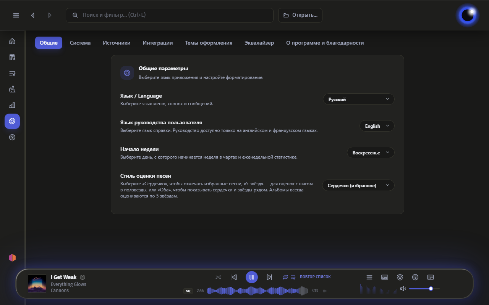
Параметры
Система
•
Сделать Luminous проигрывателем по умолчанию (Windows): откройте раздел Windows «Приложения по умолчанию» и выберите типы файлов, которые открывает Luminous.
•
Сворачивать в область уведомлений: при закрытии окна Luminous скрывается в области уведомлений. Щёлкните правой кнопкой мыши значок Luminous в области уведомлений, чтобы выбрать «Воспроизведение/Пауза», «Следующая песня» или «Предыдущая песня».
•
Запускать при входе в систему: запускать Luminous при входе в систему.
•
Экспорт диагностики: сохраните файл журнала недавних сбоев и ошибок, чтобы приложить его к сообщению об ошибке.
•
Расположение данных: папка, где хранятся база данных библиотеки, кэш обложек и параметры. ZIP-версия для Windows использует Переносной режим и хранит всё в папке data рядом с приложением. Папки с музыкой на том же диске следуют за ним, если на другом компьютере диску назначается другая буква. В Linux положите пустой файл с именем portable рядом с AppImage, чтобы сделать то же самое.
•
Обновления: проверьте наличие новой версии и выберите, что делать, когда она выйдет. Установки из Microsoft Store обновляются сами.
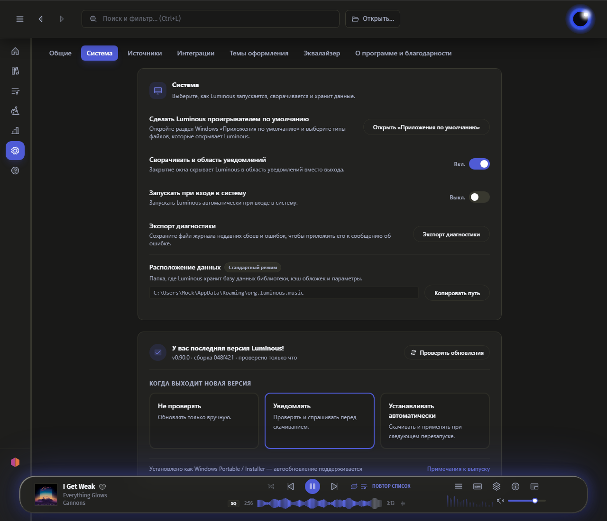
Параметры
Источники
Папки
•
Нажмите Добавить папку, чтобы добавить папку с музыкой. Новые и изменённые файлы появляются сами.
•
Выключите Отслеживание папок в реальном времени, чтобы проверять изменения только при повторном сканировании.
•
Пересканировать библиотеку при запуске проверяет папки при каждом запуске Luminous.
•
Пересканировать библиотеку ищет изменения; Принудительное полное сканирование перечитывает всё.
•
Сохранять обложки рядом с музыкой сохраняет обложки как cover.jpg в папках альбомов, а фотографии исполнителей — как artist.jpg. Существующие изображения в папках никогда не перезаписываются.
•
Если папка показана как недоступная, потому что изменилась буква диска или вы переместили музыку, нажмите Найти… и выберите новое расположение. Число прослушиваний, оценки и списки воспроизведения сохранятся.
•
Чтобы переместить папку, которая ещё доступна, нажмите Изменить сведения о папке, затем Изменить расположение….
Удалённая музыка
•
Удалённый WebDAV: потоковое воспроизведение с Nextcloud, ownCloud, Synology и других серверов WebDAV.
•
Медиасерверы: подключите сервер OpenSubsonic, например Navidrome, Gonic или LMS. Luminous синхронизирует его библиотеку и может передавать обратно ваши прослушивания.
•
Удалённая музыка доступна только для чтения: изменения тегов и обложек остаются в Luminous.
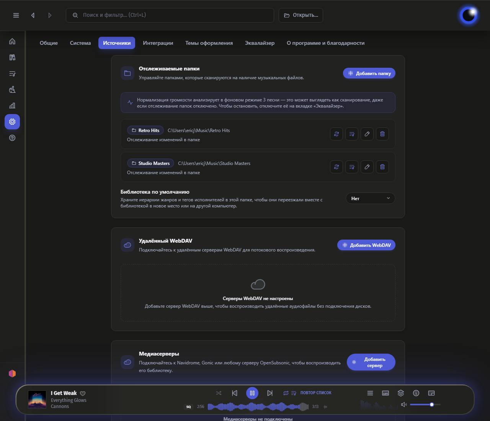
Параметры
Интеграции
Каждая интеграция необязательна. Отключите любую из них, чтобы эта часть Luminous работала без выхода в сеть.
•
Онлайн-сервисы: главный переключатель справа вверху. Переведите его в положение Не в сети, и Luminous не будет обращаться к внешним сервисам (обложки, тексты песен, биографии, ListenBrainz, вход в MusicBrainz, статус в Discord и проверка обновлений); сохранённые тексты и обложки по-прежнему показываются, а библиотеки Subsonic и WebDAV продолжают работать.
•
Скробблер ListenBrainz: вставьте Токен пользователя, нажмите Проверить и сохранить, затем включите скробблинг. Выберите, отправлять ли также оценки. Отправку статуса «сейчас играет» и паузу скробблинга можно переключать во всплывающем окне профиля MusicBrainz на боковой панели.
•
Приостановить весь скробблинг (во всплывающем окне профиля на боковой панели или в области уведомлений) останавливает отправку, не отключая учётную запись. Прослушивания, сделанные без сети, ждут, пока вы не нажмёте Синхронизировать.
•
MusicBrainz Picard: Luminous находит Picard или позволяет указать путь к нему, чтобы открывать файлы в Picard.
•
Discord Rich Presence: показывайте в Discord, что вы слушаете. Приложение Discord для компьютера должно быть запущено.
•
fanart.tv: загружайте фотографии исполнителей и другие изображения, которые Luminous не находит локально. Добавьте ключ API и нажмите Проверить и сохранить. Без ключа Luminous использует изображения из Викиданных.
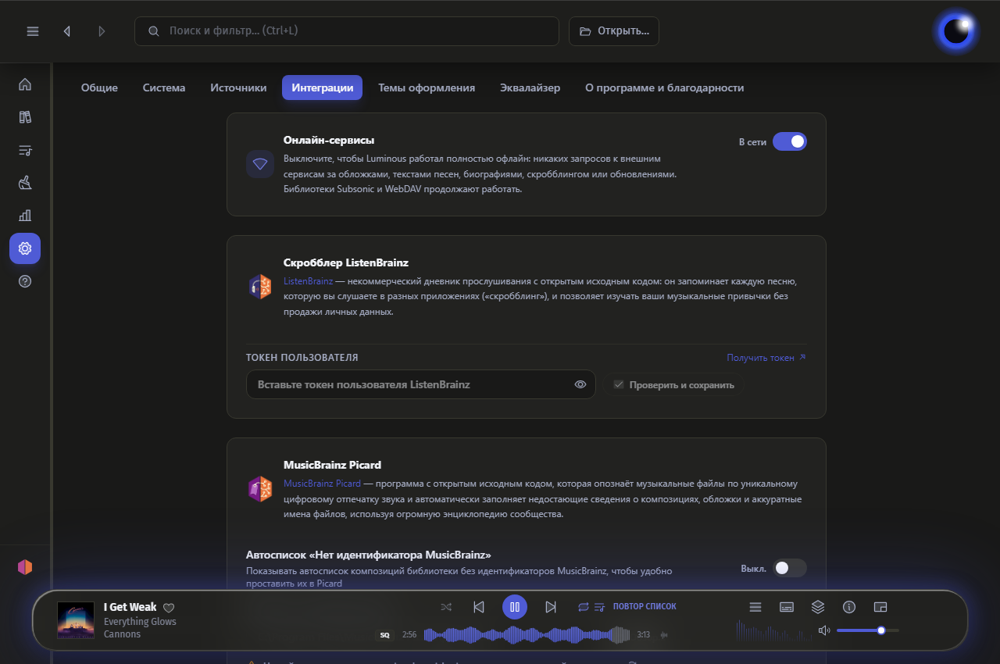
Основы
Упорядочение
Переименовывайте и перемещайте файлы по их тегам. Пока вы не нажмёте Упорядочить музыку, ничего не изменится.
1
Выберите шаблон: По умолчанию, Альтернативный или Свой, чтобы написать собственный. Дерево ниже показывает результат.
2
Выберите папку назначения: исходную папку библиотеки или Другая…, чтобы указать другую.
3
Решите, переносить ли сопутствующие файлы, заменять ли пробелы символами подчёркивания и менять ли буквы с диакритикой.
4
Проверьте предпросмотр. В нём только файлы, которые будут перемещены, со старым и новым расположением.
5
Нажмите Упорядочить музыку.
•
Включите Автоупорядочение справа вверху (или в Параметры → Источники), чтобы новые файлы и файлы с изменёнными тегами автоматически переименовывались и перемещались в фоновом режиме.
•
Очистить удаляет отсутствующие песни, пустые папки и дубликаты записей.
Найдите его в Параметры → Эквалайзер. Любое изменение применяется мгновенно, даже во время песни.
10 полос
•
Включите параметр Включить эквалайзер, затем выберите пресет или сформируйте собственную кривую.
•
Перетащите ползунок, чтобы усилить или ослабить его частоту, до ±20 дБ.
•
Уменьшайте Предусиление, когда усиливаете полосы, чтобы громкие фрагменты не искажались.
•
У режимов «10 полос» и «Параметрический» свои полосы, предусиление и пресет, поэтому переключение никогда не меняет другой режим.
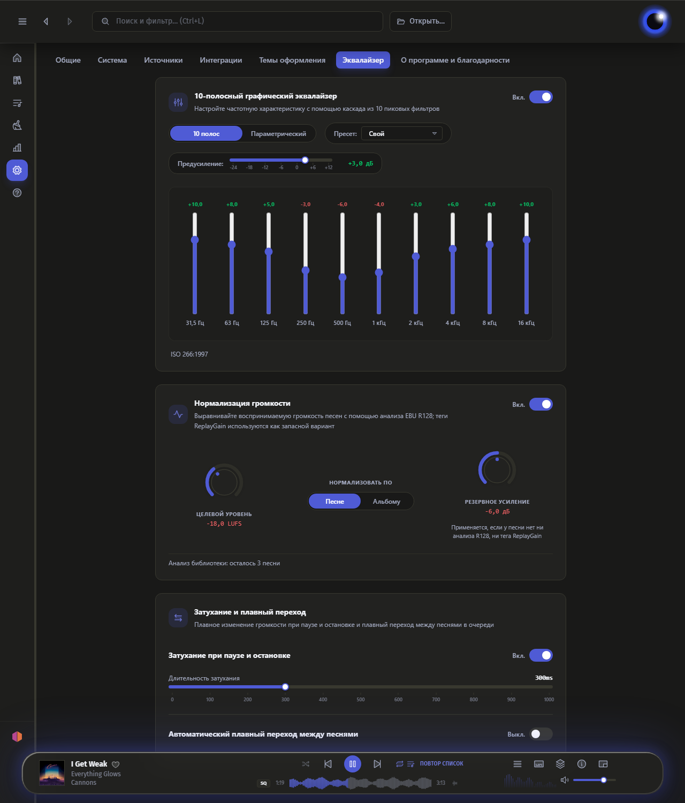
Параметрический
•
Перетащите узел, чтобы задать его частоту и усиление. Прокрутите колёсико над ним, чтобы сделать его шире или уже (Q).
•
Дважды щёлкните график, чтобы добавить полосу (до 20). В таблице ниже указаны тип, значения и переключатель включения каждой полосы.
•
Сбросить полосы возвращает плоскую характеристику.
•
Меню ⋯ рядом с пресетом содержит действия с пресетом:
– Импорт… загружает профиль коррекции наушников (см. ниже).
– Экспорт… сохраняет полосы и предусиление в файл Equalizer APO.
– Сохранить как… сохраняет текущие полосы как ваш пресет в разделе Мои пресеты.
– Переименовать и Удалить управляют вашими пресетами.
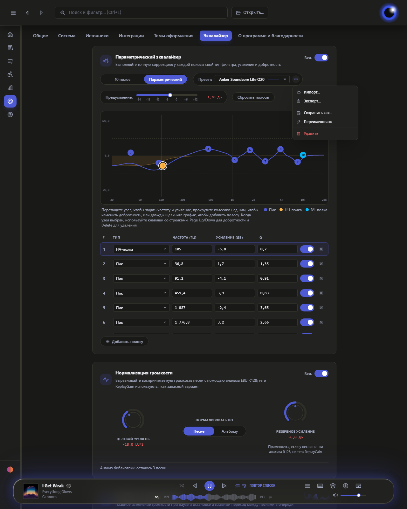
Коррекция наушников
•
Найдите свои наушники на AutoEq, выберите EqualizerAPO ParametricEq в качестве приложения эквалайзера и скачайте файл настроек.
•
В режиме «Параметрический» выберите в меню ⋯ пункт Импорт…, затем Выбрать файл… или вставьте текст.
•
Профиль сохраняется в разделе Мои пресеты и сразу применяется. Если Luminous не может воспроизвести его точно, он называет проблемную строку и ничего не меняет.
Нормализация громкости
•
Включите её, чтобы выровнять громкость между песнями.
•
Целевой уровень задаёт общую громкость воспроизведения.
•
Выберите для параметра Нормализовать по значение Альбому, чтобы сохранить разницу громкости между песнями одного альбома.
•
Песни, которые ещё не проанализированы, используют теги ReplayGain или Резервное усиление.
Затухание и плавный переход
•
Затухание при паузе и остановке плавно снижает громкость вместо резкого отключения.
•
Плавный переход при ручной смене песни смешивает песни, когда вы переключаете их; Автоматический плавный переход между песнями смешивает их в конце песни.
•
Сохранять непрерывность в пределах альбома сохраняет бесшовное воспроизведение концертных и концептуальных альбомов.
Параметры
Темы оформления
Выбор темы
•
Luminous окрашивает всё приложение по обложке играющего альбома. Понравился результат? Сохраните его как свою тему.
•
Системная следует вашей настройке светлой или тёмной темы. Чтобы закрепить один вариант, используйте кнопки Светлая, Тёмная и Системная на её карточке.
•
Нажмите любую тему из раздела Готовые темы, чтобы переключиться на неё.
Темы-дополнения для сторонников (только версия из Microsoft Store)
•
Дополнительные темы с собственным оформлением и анимацией. Нажмите кнопку на карточке (Купить за…, Получить бесплатно или Получить), чтобы добавить тему, затем нажмите карточку, чтобы использовать её.
•
Не видите свою покупку? Нажмите Проверить покупки.
•
Темы-дополнения сохраняют собственные цвета; изменить их нельзя.
Создание своей темы
•
Откройте Конструктор тем, чтобы задать собственные цвета.
•
Используйте Импортировать тему, чтобы добавить тему из файла. Карточку каждой своей темы можно изменить, экспортировать или удалить.
Анимация
•
Если в системе включено сокращение движения, анимации сдвига заменяются плавным появлением и исчезновением.
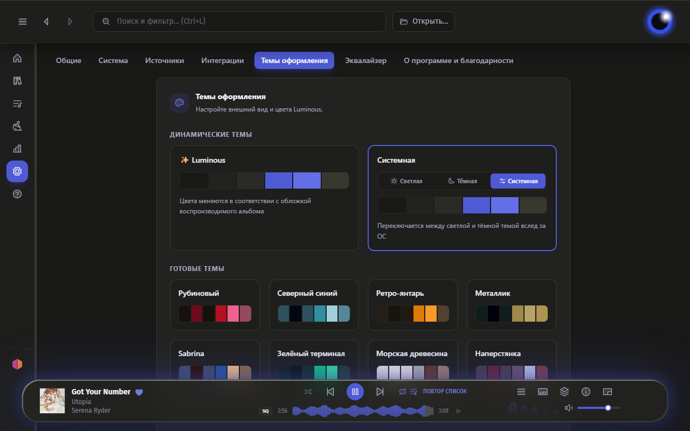
Советы и приёмы
Сочетания клавиш
Воспроизведение
Пробел
Воспроизведение / пауза
←
Предыдущая песня
→
Следующая песня
↑
Громче
↓
Тише
Page Up
Перемотать на 10 с назад
Page Down
Перемотать на 10 с вперёд
Навигация
CtrlL
Перейти в строку поиска
Esc
Закрыть список поиска
CtrlO
Открыть песню
Ctrl[
Назад
Ctrl]
Вперёд
CtrlA
Выделить всё в текущем списке
Макет и вид
Ctrl1
Показать или скрыть левую боковую панель
Ctrl2
Переключить режим погружения
Ctrl3илиCtrlI
Показать или скрыть информационную панель
CtrlM
Переключить мини-проигрыватель
Ctrl,
Открыть параметры
Ctrl/
Показать этот список
Боковые кнопки мыши и специальные клавиши браузера «назад» и «вперёд» тоже перемещают по истории. Мультимедийные клавиши на клавиатуре или устройстве тоже управляют воспроизведением.
Параметры
О программе и благодарности
Исходный код находится на GitHub, там же указаны все библиотеки, которые использует Luminous, и лицензия, по которой он распространяется.
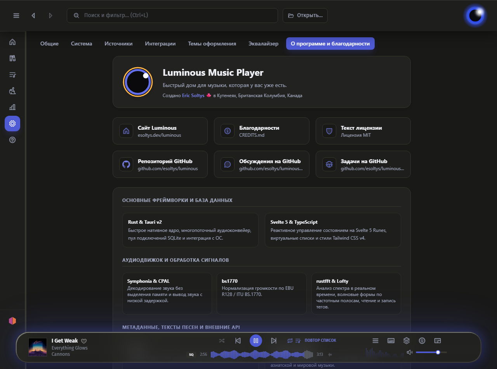
Советы и приёмы
Контекстные меню и выбор нескольких элементов
•
Щёлкните песню правой кнопкой мыши, чтобы увидеть «Воспроизвести», «Добавить в список воспроизведения», «Перейти к исполнителю», «Перейти к альбому», «Изменить теги» и другое.
•
Щёлкните альбом правой кнопкой мыши, чтобы увидеть Воспроизвести альбом, Добавить в очередь, Изменить сведения об альбоме, Открыть в Picard, Поделиться карточкой…, Закрепить на главной и Не учитывать в статистике.
•
Shift + щелчок выделяет диапазон, Ctrl + щелчок добавляет строки, а CtrlA выделяет всё в списке.
•
Если выбраны песни, панель инструментов предлагает Воспроизвести выбранное, Добавить в список воспроизведения и Снять выделение.